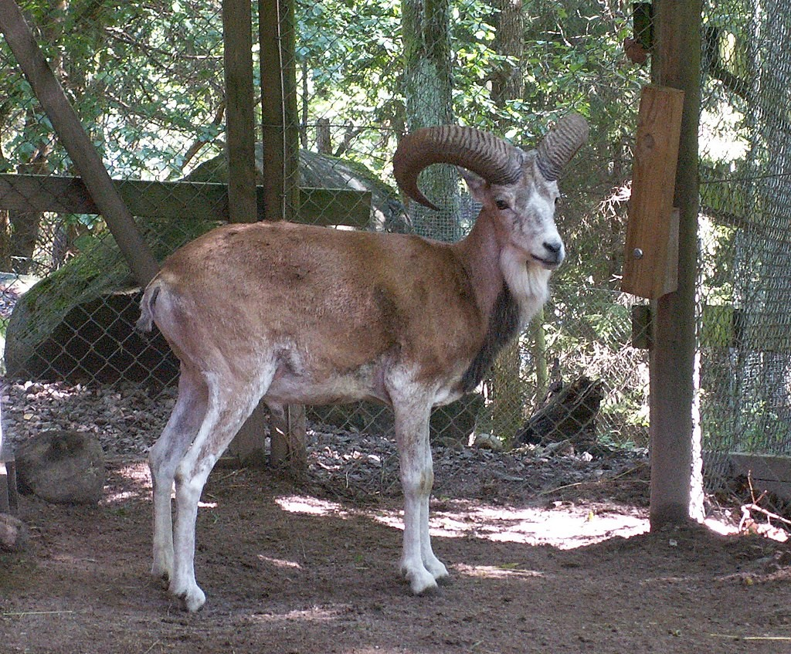

<!DOCTYPE html>
<html lang="en">

<head>
    <meta charset="UTF-8">
    <meta http-equiv="X-UA-Compatible" content="IE=edge">
    <meta name="viewport" content="width=device-width, initial-scale=1.0">
    <title>Urial/title>
    <link rel="stylesheet" href="../../bootstrap.css">
    <style>
        img{
            height: 450px !important;
        }
    </style>
</head>

<body>
    <div class="container">
        <div class="row">
            <div class="col-12">
                <h1 class="text-center py-2 my-4 bg-dark text-white">Urial</h1>
            </div>
        </div>
        <div class="row">
            <div class="col-md-6">
                <figure class="figure border">
                    
                </figure>
            </div>
            <div class="col-md-6">
                <table class="table border">
                    <tr>
                        <td class="border">Kingdom</td>
                        <td class="border">Animalia</td>
                    </tr>
                    <tr>
                        <td class="border">Phylum</td>
                        <td class="border">Chordata</td>
                    </tr>
                    <tr>
                        <td class="border">Class</td>
                        <td class="border">Mammalia</td>
                    </tr>
                    <tr>
                        <td class="border">Order</td>
                        <td class="border">Artiodactyla</td>
                    </tr>
                    <tr>
                        <td class="border">Family</td>
                        <td class="border">Bovidae</td>
                    </tr>
                    <tr>
                        <td class="border">Genus</td>
                        <td class="border">Ovis</td>
                    </tr>
                    <tr>
                        <td class="border">Species</td>
                        <td class="border">O. vignei</td>
                    </tr>
                </table>
                <p class="text-black">The urial (/ˈʊəriəl/ OOR-ee-əl; Ovis vignei), also known as the arkars or shapo, is a wild sheep native to Central and South Asia. It is listed as Vulnerable on the IUCN Red List.[1]
                    Urial males have large horns, curling outwards from the top of the head turning in to end somewhere behind the head; females have shorter, compressed horns. The horns of the males are up to 100 cm (39 in) long. The shoulder height of an adult male urial is between 80 and 90 cm (31 and 35 in
                    </p>
            </div>
            <div class="col-12">
                <p>The urial is native to montane areas in the Pamir Mountains, Hindu Kush and Himalayas up to an elevation of 4,500 m (14,800 ft); it is distributed from northeastern Iran, Afghanistan, Turkmenistan, Tajikistan, Uzbekistan and southwestern Kazakhstan to northern Pakistan and Ladakh in northwestern India. It prefers grassland, open woodland and gentle slopes, but also inhabits cold arid zones with little vegetation.</p>
            
            </div>
        </div>
    </div>
</body>

</html>